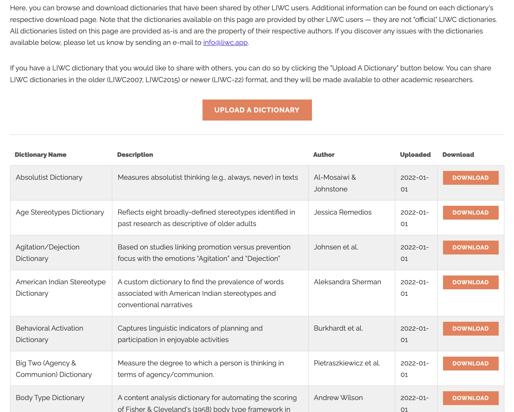

前几天刚刚分享 LIWC vs Python | 文本分析之词典词频法略讲(含代码)，借鉴LIWC，我觉得中文也需要有社科类的中文情感词典库，如果能汇聚已发表论文中的中文情感词典，如用户生成内容UGC那样，那么中文文本分析也会变的容易。下图是LIWC用户分享词典界面。
LIWC用户分享词典
没有购买LIWC是看不到截图中的「USER-CREATED LIWC DICTIONARIES」。涉及版权，英文词典文件不作分享，一起尊重知识。

中文领域有很多发表出来的各研究领域的情感词典，如果有词典推荐，欢迎thunderhit@qq.com联系我，我可以将词典整理为cntext内置格式。
假设cntext内置词典丰富了，使用cntext做如下文本分析操作。
案例: cntext操作
cntext内置词典
import cntext as ct
#cntext版本
print('cntext版本: {}'.format(ct.__version__))
#查看cntext内置词典
ct.dict_pkl_list()
Run
'cntext版本: 1.7.1'
['DUTIR.pkl',
'HOWNET.pkl',
'sentiws.pkl',
'ChineseFinancialFormalUnformalSentiment.pkl',
'ANEW.pkl',
'LSD2015.pkl',
'NRC.pkl',
'geninqposneg.pkl',
'HuLiu.pkl',
'AFINN.pkl',
'ADV_CONJ.pkl',
'LoughranMcDonald.pkl',
'STOPWORDS.pkl',
'concreteness.pkl']
导入内置pkl词典
cntext内词典正在规范化，理想的规范词典应该含有词语列表、Desc简介和Referer参考文献三部分。例如，大连理工大学情感本体库词典DUTIR.pkl
dutir = ct.load_pkl_dict('DUTIR.pkl')
dutir
Run
{'DUTIR': {'哀': ['怀想', '治丝而棼', '伤害',...],
'好': ['进贤黜奸', '清醇', '放达', ...],
'惊': ['惊奇不已', '魂惊魄惕', '海外奇谈',...],
'惧': ['忸忸怩怩', '谈虎色变', '手忙脚乱',...],
'乐': ['百龄眉寿', '娱心', '如意',...],
'怒': ['饮恨吞声', '扬眉瞬目',...],
'恶': [出逃', '鱼肉百姓', '移天易日',...]},
'Desc': '大连理工大学情感本体库，细粒度情感词典。含七大类情绪，依次是哀, 好, 惊, 惧, 乐, 怒, 恶',
'Referer': '徐琳宏,林鸿飞,潘宇,等.情感词汇本体的构造[J]. 情报学报, 2008, 27(2): 180-185.'}
dutir返回了
- 词典数据
- Desc词典介绍
- Referer词典文献出处
用cntext做情感计算
情感分析，统计文本中某类词出现个数，使用cntext.sentiment函数即可实现。
sentiment(text, diction, lang=‘chinese’)
- text: 文本字符串
- diction: 情感词典
- lang: 语言类型，“chinese” or “english”; 默认lang=“chinese”
import cntext as ct
#自定义词典
diy_dict = {'pos': ['高兴', '快乐', '分享'],
'neg': ['难过', '悲伤'],
'adv': ['很', '特别']}
#cntext内置词典-DUTIR
dutir = ct.load_pkl_dict('DUTIR.pkl')['DUTIR']
text = '我今天得奖了，很高兴，我要将快乐分享大家。'
#使用diy_dict做情感分析
print(ct.sentiment(text=text,
diction=diy_dict,
lang='chinese')
#使用DUTIR做情感分析
print(ct.sentiment(text=text,
diction=dutir,
lang='chinese'))
Run
{'pos_num': 3,
'neg_num': 0,
'adv_num': 1,
'stopword_num': 8,
'word_num': 14,
'sentence_num': 1}
{'哀_num': 0,
'好_num': 0,
'惊_num': 0,
'惧_num': 0,
'乐_num': 2,
'怒_num': 0,
'恶_num': 0,
'stopword_num': 8,
'word_num': 14,
'sentence_num': 1}
LIWC用户分享词典
以下内容整理自LIWC网站，我添加了doi及中文翻译。由于没有阅读每个词典对应的文献，词典简介翻译可能会有差错。
以下词典仅仅是介绍，有疑惑的可以点击doi，找到对应论文进行理解。
由于版权问题，词典文件资源不作分享。
| Dictionary | Desc | Author | Date | DOI |
|---|---|---|---|---|
| Absolutist | Measure absolutist thinking in texts (eg, always, never)衡量文本中的绝对主义思维（例如，always、never） | Al-Mosaiwi & Johnstone | 2018 | https://doi.org/10.1177/2167702617747074 |
| Age_Stereotypes | Reflects eight broadly-defined stereotypes identified in past research as descriptive of older adults,such as impaired, despondent, shrew, recluse, vulnerable, golden, grandparent, conservative反映过去研究中确定的八种广泛定义的刻板印象(用于描述老年人)，例如“受损、沮丧、泼妇、隐士、脆弱、黄金、祖父母、保守” |
Jessica Remedios | 2010 | https://doi.org/10.1080/15298860903054175 |
| Agitation&Dejection | Based on studies linking promotion versus prevention focus with the emotions “Agitation” and “Dejection” 基于将促进与预防重点与情绪“激动”和“沮丧”联系起来的研究 |
Johnsen et al. | 2014 | https://doi.org/10.2147/PRBM.S54947 |
| Behavioral_Activation | Captures linguistic indicators of planning and participation in enjoyable activities 捕捉规划和参与愉快活动的语言指标 |
Burkhardt et al. | 2021 | https://doi.org/10.2196/28244 |
| Big_Two | Measure the degree to which a person is thinking in terms of Agency/Communion. 衡量一个人在机构/交流方面的思考程度。 |
Pietraszkiewicz et al. | 2019 | https://doi.org/10.1002/ejsp.2561 |
| Brand_Personality | Assesses Aaker’s five brand personality dimensions as well as 42 personality trait norms 评估 Aaker 的五个品牌个性维度以及 42 个个性特征规范 |
Opoku et al. | 2008 | https://doi.org/10.1080/08841240802100386 |
| Controversial_Terms | A lexicon of terms that range in their degree of controversiality, particularly in terms of their use in the media. 具有争议程度的术语词典，特别是在媒体中的使用方面。 |
Mejova et al. | 2014 | http://arxiv.org/abs/1409.8152 |
| Corporate_Social_Responsibility | Reveals four dimensions of corporate social responsibility 揭示企业社会责任的四个维度 |
Nadra Pencle & Irina Mălăescu | 2016 | https://doi.org/10.2308/jeta-51615 |
| Cost_Benefit | Measures language related to perceived costs and benefits that result from a decision or behavior. 衡量与决策或行为导致的感知成本和收益相关的语言。 |
Michael McCullough | 2006 | https://doi.org/10.1037/0022-006X.74.5.887 |
| Creativity&Innovation | Language describing creation and/or innovation 描述创造和/或创新的语言 |
Neufeld and Gaucher | 2017 | |
| Crovitz_Innovator_Identification | Identify “innovators” and “non-innovators” using Hebert F. Crovitz’s 42 relational words 使用 Hebert F. Crovitz 的 42 个相关词识别“创新者”和“非创新者” |
Greco et al. | 2021 | https://doi.org/10.1007/s11135-020-01038-x |
| extended_Moral_Foundations_Dictionary(eMFD) | The eMFD, unlike previous methods, is constructed from text annotations generated by a large sample of human coders. 与以前的方法不同，eMFD 是由大量人类编码人员生成的文本注释构成的。 |
Hopp et al. | 2021 | https://doi.org/10.3758/s13428-020-01433-0 |
| Foresight | Measures the degree to which anticipation/foresight occurs. That is, words pointing to indicate where things are heading (often on the basis of recurrent behaviors). 衡量预期/预见发生的程度。 也就是说，指向事物前进方向的词语（通常基于反复出现的行为）。 |
Robert Hogenraad | 2020 | https://doi.org/10.1007/s11135-020-01071-w |
| Imagination | Digital lexicon of 627 entries relative to imagination and transfiguration, i.e., words pointing to the unbelievable and whatever is beyond the real. 与想象和变形相关的 627 个条目的数字词典，即指向令人难以置信的事物和超越真实事物的词语。 |
Robert Hogenraad | 2019 | https://doi.org/10.1007/s11135-018-0813-7 |
| Global_Citizen | A dictionary to assess language usage related to global citizenship 用于评估与全球公民相关的语言使用情况的词典 |
Stephen Reysen et al. | 2014 | https://doi.org/10.4018/ijcbpl.2014100101 |
| Grant_Evaluation | Captures categories relevant to scientific grant review (ability, achievement, agentic, research, standout, pos eval, neg eval) 捕获与科学资助审查相关的类别（能力、成就、代理、研究、杰出、正面、负面） |
Kaatz et al. | 2015 | https://doi.org/10.1097/ACM.0000000000000442 |
| Home_Perceptions | Calculates the frequency of words describing clutter, a sense of the home as unfinished, restful words, and nature words 计算描述杂乱、未完成的家感、宁静的词和自然词的频率 |
Saxbe & Repetti | 2022-01-01 | https://doi.org/10.1177/0146167209352864 |
| Invective Dictionary | Use this dictionary to detect invective language in narrative |
A. T. Panter | 2022-01-01 | |
| Linguistic_Category_Model | A computerized LCM analysis method 使用这本词典检测叙事中的谩骂语言 |
Yi-Tai Seih | 2017 | https://doi.org/10.1177/0261927X16657855 |
| Loughran_McDonald_Financial_Sentiment | Dictionary for measuring positive and negative sentiment specifically in financial texts.This is the 2018 version of the dictionary. 专门用于衡量金融文本中正面和负面情绪的字典。这是 2018 年版的字典。 |
Loughran & McDonald | 2011 | https://doi.org/10.1111/j.1540-6261.2010.01625.x |
| Masculine_and_Feminine | List of masculine and feminine words from Gaucher et al. (2011) Gaucher 等人的男性化和女性化词列表。 (2011) |
Maureen McCusker | 2011 | https://doi.org/10.1037/a0022530 |
| Mindfulness | Two categories of mindfulness language describing the mindfulness state and the more encompassing “mindfulness journey” 描述正念状态的两类正念语言和更全面的“正念之旅” |
Collins et al. | 2009 | https://doi.org/10.1037/a0017579 |
| Mind_Perception | Measures linguistic use of mind perception (words related to “agency” and “experience”) in naturalistic settings 在自然主义环境中测量心理感知（与“agency”和“experience”相关的词）的语言使用 |
Schweitzer & Waytz | 2020 | https://doi.org/10.1037/xge0001013 |
| Moral_Foundations_v2.0 | An updated version of the Moral Foundations Dictionary that is recommended over the original by its creators. 道德词典的更新版本，由其创建者推荐。 |
Jeremy Frimer | 2019 | https://doi.org/10.1016/j.jrp.2019.103906 |
| Moral_Justification | Measures variation in justification content (deontological, consequentialist, or emotive) as a function of moral foundations 衡量辩护内容（道义论、后果论或情感论）随道德基础的变化 |
Wheeler & Laham | 2016 | https://doi.org/10.1177/0146167216653374 |
| Personal_Values_Dictionary | Measures the 10 Schwartz Values (and 4 higher-order value dimensions). 测量 10 个 Schwartz 值（和 4 个高阶值维度）。 |
Ponizovskiy et al. | 2020 | https://doi.org/10.1002/per.2294 |
| Prosocial_Words | Calculates the density of prosocial words in anything that a person says 计算一个人所说的任何内容中亲社会词的密度 |
Jeremy Frimer | 2022-01-01 | https://doi.org/10.1073/pnas.1500355112 |
| Regulatory_Mode | Locomotion and Assessment States of Goal Pursuit 目标追求的运动和评估状态 |
Dana Kanze, Mark A. Conley, and E. Tory Higgins | 2019 | https://doi.org/10.1016/j.obhdp.2019.04.002 |
| Security_Language | Provides a reference for the comparative study of security-related linguistic repertoires in political texts (speeches, policy documents, etc.). 为政治文本（演讲、政策文件等）中与安全相关的语言库的比较研究提供参考。 |
Stephane Baele & Olivier Sterck | 2014 | https://doi.org/10.1111/1467-9248.12147 |
| Self-Care | Measures the degree to which self-care words are used (e.g., diet, yoga) 衡量自我保健词的使用程度（例如，饮食、瑜伽） |
Xunyi Wang et al. | 2018 | https://doi.org/10.1093/jamia/ocy012 |
| Stereotype_Content | A stereotype content dictionary, made using a semi-automated method, to capture the Stereotype Content Model in text 使用半自动化方法制作的刻板印象内容字典，用于捕获文本中的刻板印象内容模型 |
Nicolas et al. | 2022-01-01 | https://doi.org/10.1002/ejsp.2724 |
| Stress | A dictionary used to measure psychological stress. Created based on the LIWC2007 English Dictionary. 用来测量心理压力的字典。 根据 LIWC2007 英语词典创建。 |
Wei Wang et al. | 2022-01-01 | https://doi.org/10.1111/apps.12065 |
| Well_Being | Words that might indicate the presence of purpose or meaning 可能表明存在目的或意义的词 |
Ratner et al. | 2019 | https://doi.org/10.1080/10888691.2019.1659140 |
分享词典
中文领域有很多发表出来的各研究领域的情感词典，如果有词典推荐，欢迎thunderhit@qq.com联系我，我会将词典整理为cntext内置格式。
长期征稿

广告位
想轻松而快捷的深刻了解一个领域，看视频(直播)学习是一个不错的方式。
-
大邓每年会有4场直播，五一、十一、寒、暑假，如果时间点接近，可考虑报名参与直播课。
-
如果只意性价比，且已迫不及待想学，可以考虑直接报名大邓的录播课。
-
如果不想学，也可以考虑外包。更建议找淘宝，如果找我咨询，请先阅读有偿说明